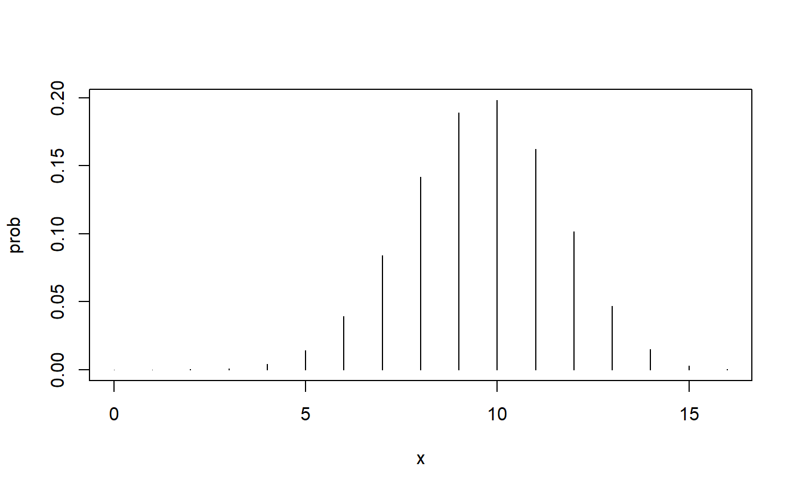
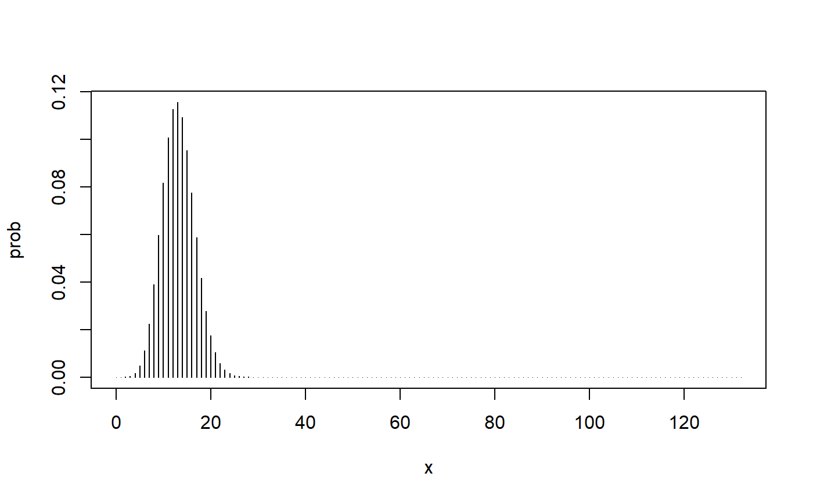
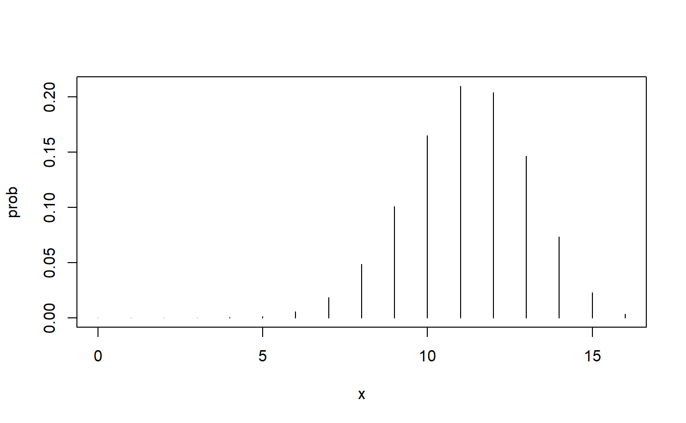
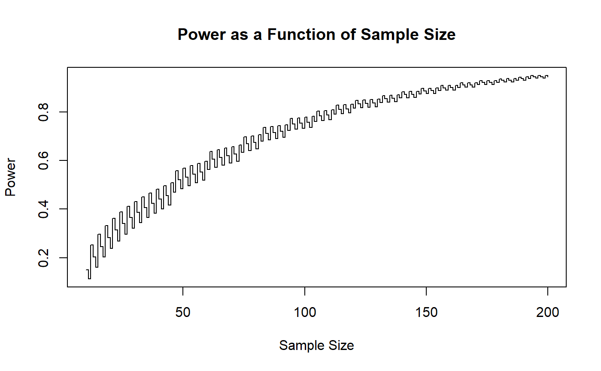
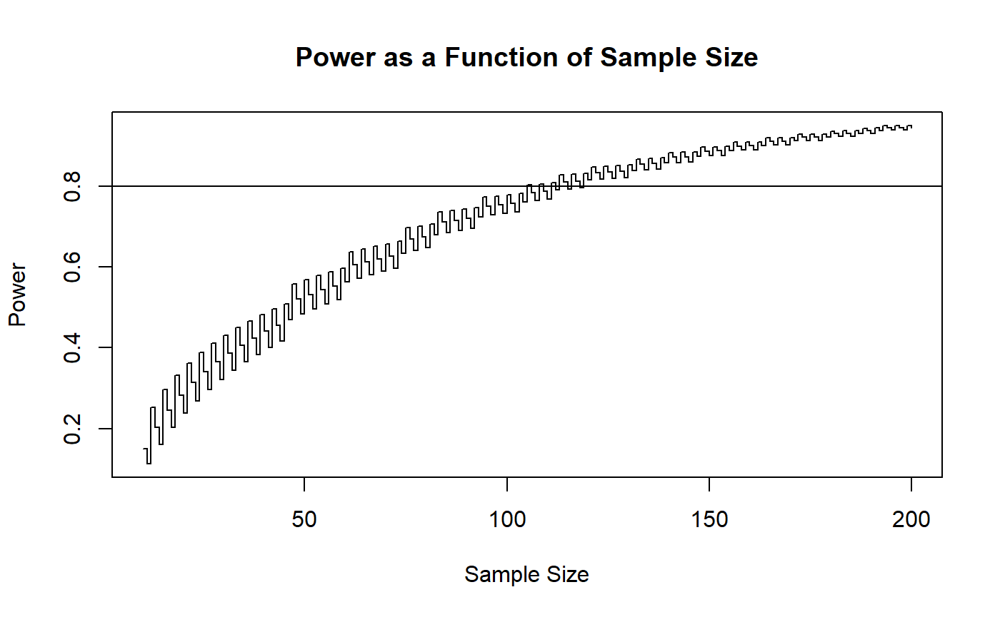

OnePropExact.RmdIn this vignette I will describe how to use the binomial distribution to conduct hypotheses tests and construct confidence intervals for exact inference about a population proportion based on a single sample.
The nplearn package is required for this vignette. All other functions used are in the base package.
library(nplearn)We might expect that the list of conditions for valid inference will be smaller for a nonparametric test than what we might see for a parametric test, and indeed that is the case here. There are only two conditions for valid inference.
Considering the first condition, we can see that if this condition is met that it will satisfy at least a portion of the second condition. The units of analysis will not be related to each other if we indeed selected at random from the population. The only additional consideration we need to make in the design and measurement phase is to make sure that we keep it that way. That is, we should not establish a relationship among our observations by letting the measurement of one unit influence the measurement of another unit. For example, we will not let one person observe the measurement of another person, such as would happen if we survey individuals in earshot of one another or let individuals collaborate on a measurement task.
It is probably obvious to you that in many disciplines it is the first of these conditions that is more difficult to achieve. We seldom have access to the entire population of interest, even if we do have the means to select a random sample. All is not lost! If can randomly sample from an accessible population, and if we know something about the characteristics of this population, we can estimate the proportion for this population. If our real interest is in some larger population, we at least have more information about a subset of that population, which would suggest that future study might be replication with additional subsets.
What if we cannot randomly sample from any population but are instead confined to something a bit more convenient? This may happen due to limited funding or the unwillingness of individuals to become study participants. There are still inferences to be made, but we should be aware that it may not be the inference we hoped to make. We can envision some hypothetical population that could very well have yielded a random sample that is the sample we have at hand. For example, a study conducted with a class of undergraduate psychology students could be considered as representative of undergraduate psychology students in other classes that semester, as well as the type of students who very well might have enrolled in psychology, but decided to postpone it for another time. Assuming that time dose not influence the response variable of interest (which is probably not a very reasonable assumption for many response variables as more time goes by), we can even consider past students in undergraduate psychology courses as part of this hypothetical population. The key point is that we cannot know exactly what this population looks like, but we may know some key characteristics of this population and we must restrict our inference based on these characteristics.
The above reasoning may convince us that there is still value to making inferences, even when we have not met the condition of random sampling, but it should also give us pause when we think about the term “exact” when talking about exact inferences. The term is precise when the conditions are completely met. We can calculate our error rates and be confident about our stated level of confidence. If we have not used random sampling or if our units are not independent of one another (as they are not apt to be if we have not randomly sampled), the term exact applies to our cacluations, yet our inferences are not exactly known. This is not peculiar to nonparametric statistical methods, but is a consequence of inference, regardless whether parametric or nonparametric methods are being employed. In fact, this situation is more apt to apply to parametric methods due to the longer list of conditions that often include conditions that are even more difficult to justify than those we need for inferences for a single proportion.
When estimating a proprtion, there is one type of research study in which random sampling is not even an issue. Consider a well-known population proportion, such as a the proportion of examinees who exceed a specified score on a standardized test or a long-time treatment with an established cure rate. We might be interested in whether individuals in a test prep program or patients receiving a new treatment can be considered as random samples of the aforementioned populations. In these cases an inference that points to a different proportion exceeding a score or achieving a cure suggests that we do not have a random sample from the population, yet that is what we wanted to know! If the test preparation or the newer treatment results in different proportions than those that have been established through long-term observation, we have observations from a different population, such as one that is scoring higher or being cured more often.
If a treatment has a known cure rate of 60% and a new treatment cures 14 out of 16 patients who agreed to try the new treatment, is there enough evidence to say with 90% confidence that the new treatment has a better cure rate? This is a question of inference using the following null and alternative hypotheses.
\(H_0: \pi = 0.60\)
\(H_1: \pi > 0.60\)
If the null hypothesis is true, the binomial distribution looks like this.
binom_plot(16, 0.6)
If the values in the upper tail of this distribution, specifically, values of 14 and more, are unlikely (with “unlikely” defined here as a probability of 10% or less), then we will reject this distribution as the picture of the actual state of affairs. Along with it, we will reject the null hypothesis that led to this distribution.
Here is the probability of observing 14 or more cures out of 16 trials when the cure rate is 60%.
pbinom(13, 16, 0.6, lower.tail = FALSE)
#> [1] 0.01833721This is clearly less than the proportion of errors we are willing to tolerate, so we will reject the null hypothesis in favor of the alternative hypothesis. The substantive conclusion is that the new treatment has a higher cure rate than the traditional treatment.
Here are the steps for a test of a proportion.
Determine your tolerance for errors. This is referred to as the maximum Type I error rate, \(\alpha\), where a Type I error is the rejection of a true null hypothesis.
Make \(n\) observations and determine how many of these, \(x\), meet the criterion for success.
Determine the prior probability of obtaining the observed \(x\), as well as values of \(x\) that are even more incompatible with the null hypothesis and more compatible with the alternative hypothesis as the observed value of \(x\) when the null hypothesis is true. This value is referred to as a \(p\) value.
Reject the null hypothesis in favor of the alternative hypothesis if \(p \le \alpha\).
In the above example, the new treatment was developed to achieve a higher cure rate so that our only interest was an increase in the cure rate. That is why we conducted a so-called one-sided hypothesis test. Often times, such as when we want to estimate a population proportion without comparison to a known proportion, we will conduct a two-sided hypothesis test.
In the 2003 outbreak of Severe Acute Respiratory Syndrome (SARS) in Singapore, there were 17 deaths among the 132 victims who did not receive the treatment. Let us determine if there is sufficient evidence to reject a 10% rate of death, with 95% confidence, for all untreated SARS victims. Note the death rate in the sample.
It is important to note that the fact that our observed death rate, 13%, is above the death rate of interest, 10%, does not suggest that we conduct a one-sided hypothesis test with an alternative hypothesis of a death rate that is above 10%. Basing the direction of a one-sided test on our observations will yield a Type I error rate that is above our calculated rate, meaning that we will not be holding the error rate at our stated rate for error tolerance. The only time we should consider a one-sided hypothesis test is when we are truly only interested in a one-sided outcome, such as when we are researching an intervention designed to increase the rate of successful outcomes. For the SARS study, our hypotheses are these.
\(H_0: \pi = 0.10\)
\(H_1: \pi \ne 0.10\)
Here is the binomial distribution with the parameters \(n\) = 132 and \(\pi\) = 0.10.
binom_plot(132, 0.10)
We know from step #3 (above) that we need to calculate the probability of at least 17 deaths when the population death rate is 10%.
pbinom(16, 132, 0.10, lower.tail = FALSE)
#> [1] 0.1679108This gives us a probability based on the so-called upper-tail of the binomial distribution, but what should we do about the lower-tail? The rule tells us to calculate the probability of values that are at least as incompatible with the null hypothesis as our observed value. Here is how far away our observed proportion is away from the null hypothesized proportion.
In our calculation of the \(p\) value, we want to include any potential observation of \(\hat{\pi}\) that is at least this far away from the hypothesized value of 0.10. In other words, we want to include values that are no larger than this.
How many deaths are associated with this proportion?
Of course we can’t have 9.4 deaths (at least not in this universe). If we use 10 deaths, we will be closer to the null hypothesized value, not further away, so the probability of 10 deaths should not go into our \(p\) value calculation.
Yet 9 should go into our \(p\) value calculation.
Our lower-tail for our \(p\) value calculation will consist of 9 and all lower numbers of deaths.
pbinom(9, 132, 0.10)
#> [1] 0.1394856Note that this is a different value than what we obtained for the upper tail. We are working with discrete values that are not symmetrically distributed, so we cannot simply double the value of one tail in order to obtain the value for both tails. Here is our \(p\) value calculation.
This is substantially higher than our tolerance for Type I errors, so we will not reject the null hypothesis of a 10% death rate.
Look at the \(p\) value obtained when using a large-sample approximation.
prop.test(17, 132, p = 0.10)
#>
#> 1-sample proportions test with continuity correction
#>
#> data: 17 out of 132, null probability 0.1
#> X-squared = 0.91667, df = 1, p-value = 0.3384
#> alternative hypothesis: true p is not equal to 0.1
#> 95 percent confidence interval:
#> 0.07898773 0.20093189
#> sample estimates:
#> p
#> 0.1287879Even with a relatively large sample of 132 and using the correction for continuity, the \(p\) value still differs from our exact value by more than 0.03, which is substantial given that we set our entire maximum error rate at 0.05. Also note that we were able to conduct an exact nonparametric hypothesis test with this sample size, defying the misguided belief that nonparametric methods can only be used with small sample sizes.
Yes, you guessed it. The exact test has all been programmed for us in R.
binom.test(17, 132, p = 0.10)
#>
#> Exact binomial test
#>
#> data: 17 and 132
#> number of successes = 17, number of trials = 132, p-value = 0.2477
#> alternative hypothesis: true probability of success is not equal to 0.1
#> 95 percent confidence interval:
#> 0.07684744 0.19817803
#> sample estimates:
#> probability of success
#> 0.1287879Uh oh! Look at the \(p\) value and compare it to ours. They are not the same! I can calculate the \(p\) value that this function produced by changing the lower tail number of successes to 8 instead of 9.
So why did the programmers use 8 instead of 9? I looked at the code for this function (try doing that in SAS or SPSS!) and I found an error. You already know that to get the upper tail probability that you need to subtract 1 from the observed number of successes. For example, in this problem we subtracted 1 from 17 to obtain the correct probability for the upper tail. We don’t need to do that for the lower tail. Unfortunately, whoever programmed this function accidentally did it for both tails. Oops! We are going to be using confidence intervals instead of hypotheses tests, so I’m going to hope that they got it correct when constructing confidence intervals so that I don’t have to write a new function for you. Keep your fingers crossed!
Using both of the examples above, I will build confidence intervals (one lower-bounded and one two-sided)by inverting the hypothesis tests.
If a treatment has a known cure rate of 60% and a new treatment cures 14 out of 16 patients who agreed to try the new treatment, how much better is the new treatment? Estimate the new cure rate with 90% confidence.
Let’s use the exact binomial test to test all possible hypotheses. (I’ll actually start with the old treatment cure rate to keep our output more manageable.) For this problem, we will calculate the \(p\) values using the upper tail.
h_0 <- seq(0.60, 1, by = 0.01)
p_val <- pbinom(13, 16, h_0, lower.tail = FALSE)
outcome <- ifelse(p_val <= .10, "reject", "retain")
cbind(h_0, p_val, outcome)
#> h_0 p_val outcome
#> [1,] "0.6" "0.018337214398464" "reject"
#> [2,] "0.61" "0.0221542292139561" "reject"
#> [3,] "0.62" "0.0266414810995313" "reject"
#> [4,] "0.63" "0.0318914752234443" "reject"
#> [5,] "0.64" "0.0380047592060612" "reject"
#> [6,] "0.65" "0.0450897365946551" "reject"
#> [7,] "0.66" "0.0532622613554241" "reject"
#> [8,] "0.67" "0.0626449734040624" "reject"
#> [9,] "0.68" "0.0733663328691627" "reject"
#> [10,] "0.69" "0.085559309153133" "reject"
#> [11,] "0.7" "0.0993596801723784" "reject"
#> [12,] "0.71" "0.114903897716682" "retain"
#> [13,] "0.72" "0.132326477012404" "retain"
#> [14,] "0.73" "0.151756872707723" "retain"
#> [15,] "0.74" "0.173315810086731" "retain"
#> [16,] "0.75" "0.197111049899831" "retain"
#> [17,] "0.76" "0.22323257838622" "retain"
#> [18,] "0.77" "0.251747231563218" "retain"
#> [19,] "0.78" "0.282692785465975" "retain"
#> [20,] "0.79" "0.316071572644835" "retain"
#> [21,] "0.8" "0.35184372088832" "retain"
#> [22,] "0.81" "0.389920153987035" "retain"
#> [23,] "0.82" "0.430155547677827" "retain"
#> [24,] "0.83" "0.472341498151249" "retain"
#> [25,] "0.84" "0.51620023727888" "retain"
#> [26,] "0.85" "0.561379319812455" "retain"
#> [27,] "0.86" "0.60744781521369" "retain"
#> [28,] "0.87" "0.653894662696822" "retain"
#> [29,] "0.88" "0.700129994942354" "retain"
#> [30,] "0.89" "0.74549040645934" "retain"
#> [31,] "0.9" "0.789249339696154" "retain"
#> [32,] "0.91" "0.830633988981174" "retain"
#> [33,] "0.92" "0.86885038278697" "retain"
#> [34,] "0.93" "0.903118602567474" "retain"
#> [35,] "0.94" "0.932720435796781" "retain"
#> [36,] "0.95" "0.957062146514227" "retain"
#> [37,] "0.96" "0.975755483749636" "retain"
#> [38,] "0.97" "0.98872054221409" "retain"
#> [39,] "0.98" "0.99631464662982" "retain"
#> [40,] "0.99" "0.99949205759071" "retain"
#> [41,] "1" "1" "retain"We can be 90% confident that the new treatment has a cure rate of at least 0.71, or 71%. Note how much more informative this is than our single hypothesis test.
\(\pi \ge 0.71\)
Let’s see what we get for this using the base R function.
binom.test(14, 16, p = 0.60, alternative = "greater", conf.level = 0.90)
#>
#> Exact binomial test
#>
#> data: 14 and 16
#> number of successes = 14, number of trials = 16, p-value = 0.01834
#> alternative hypothesis: true probability of success is greater than 0.6
#> 90 percent confidence interval:
#> 0.700436 1.000000
#> sample estimates:
#> probability of success
#> 0.875Good! This agrees with our results, but provides more accuracy.
In the 2003 outbreak of Severe Acute Respiratory Syndrome (SARS) in Singapore, there were 17 deaths among the 132 victims who did not receive the treatment. Let us determine the rate of death for all untreated SARS victims with 95% confidence. We will construct a two-sided confidence interval. We do this by testing all possible hypotheses (with a two-sided test) using a maximum Type I error rate of 5%. The confidence interval will consist of all retained hypotheses.
# Create all possible null hypotheses. I have restricted the range a bit to
# make the output more readable.
h_0 <- seq (0, 0.3, by = .01)
# Create function for when pi_hat > h_0
pi_hat_greater <- function(a, b, c) {
# Find the value of pi_hat
prop <- a/b
# Find the distance above h_0
dist <- prop - c
# Find out the lower-tail value the same distance below
low_val <- floor(b * (c - dist))
# Return the p-value
return(pbinom(low_val, b, c) + pbinom(a-1, b, c, lower.tail = FALSE))
}
# Create function for when pi_hat < h_0
pi_hat_less <- function(a, b, c) {
# Find the value of pi_hat
prop <- a/b
# Find the distance below h_0
dist <- c - prop
# Find out the upper-tail value the same distance above
up_val <- ceiling(b * (c + dist))
# return the p-value
return(pbinom(a, b, c) + pbinom(up_val - 1, b, c, lower.tail = FALSE))
}
p_val <- ifelse (pi_hat > h_0,
pi_hat_greater(x, n, h_0),
pi_hat_less(x, n, h_0))
# Determine the outcome
outcome <- ifelse(p_val <= .05, "reject", "retain")
# Display results
cbind(h_0, p_val, outcome)
#> h_0 p_val outcome
#> [1,] "0" "0" "reject"
#> [2,] "0.01" "3.61597705838997e-14" "reject"
#> [3,] "0.02" "1.58466568159866e-09" "reject"
#> [4,] "0.03" "5.19079773106855e-07" "reject"
#> [5,] "0.04" "2.28444171789944e-05" "reject"
#> [6,] "0.05" "0.000334239131290808" "reject"
#> [7,] "0.06" "0.00243577888657468" "reject"
#> [8,] "0.07" "0.0117339085847196" "reject"
#> [9,] "0.08" "0.051692873382411" "retain"
#> [10,] "0.09" "0.126664758568051" "retain"
#> [11,] "0.1" "0.307396410227212" "retain"
#> [12,] "0.11" "0.578208699903566" "retain"
#> [13,] "0.12" "0.78823258600851" "retain"
#> [14,] "0.13" "1" "retain"
#> [15,] "0.14" "0.80237859813876" "retain"
#> [16,] "0.15" "0.544485718640118" "retain"
#> [17,] "0.16" "0.346328031101614" "retain"
#> [18,] "0.17" "0.246160152973726" "retain"
#> [19,] "0.18" "0.140725928444915" "retain"
#> [20,] "0.19" "0.0759841014234179" "retain"
#> [21,] "0.2" "0.0492258004585849" "reject"
#> [22,] "0.21" "0.0241471386866497" "reject"
#> [23,] "0.22" "0.0112353946905877" "reject"
#> [24,] "0.23" "0.00688520741469472" "reject"
#> [25,] "0.24" "0.00293131460859641" "reject"
#> [26,] "0.25" "0.0018119232311538" "reject"
#> [27,] "0.26" "0.000708425744407884" "reject"
#> [28,] "0.27" "0.000262230507511154" "reject"
#> [29,] "0.28" "0.000160126996474669" "reject"
#> [30,] "0.29" "5.42162481835015e-05" "reject"
#> [31,] "0.3" "1.72855023244583e-05" "reject"We now have a 95% exact confidence interval from (and including) 0.08 to 0.19. Let’s see how this compares to the base R function.
binom.test(17, 132)
#>
#> Exact binomial test
#>
#> data: 17 and 132
#> number of successes = 17, number of trials = 132, p-value <
#> 2.2e-16
#> alternative hypothesis: true probability of success is not equal to 0.5
#> 95 percent confidence interval:
#> 0.07684744 0.19817803
#> sample estimates:
#> probability of success
#> 0.1287879Yes! It is the same interval, but with a bit more precision. I won’t have to rewrite the function after all because I always prefer confidence intervals to the test of a single hypothesis.
Power is the probability of rejecting a null hypothesis when a specific alternative hypothesis is correct. Recall this question that we consider earlier.
If a treatment has a known cure rate of 60% and a new treatment cures 14 out of 16 patients who agreed to try the new treatment, is there enough evidence to say with 90% confidence that the new treatment has a better cure rate?
Here are the hypotheses that we used to answer this question.
\(H_0: \pi = 0.60\)
\(H_1: \pi > 0.60\)
The alternative hypothesis is a compound hypothesis, meaning that it consists of many possible alternatives. The consequence of this is that we don’t know what the probability distribution looks like when the alternative hypothesis is correct. In order to calculate power, we need to know what the probability distribution looks like, so we need to adjust by creating a simple hypothesis. Here’s an example.
\(H_0: \pi = 0.60\)
\(H_1: \pi = 0.75\)
How do we choose a simple hypothesis? I like to use this rule: Select the simple hypothesis that is the smallest value of the alternative hypothesis that would still provide a meaningful outcome. For example, if you found the new treatment to have a cure rate of 75%, rather than the present treatment cure rate of 60%, would you consider this a meaningful finding? Yes! What about if the new treatment cure rate is 61%? Maybe not, especially if there is expense involved in widely implementing the new treatment. What about 62%? You can see where this is going. You should also recognize that we are not learning statistics right now because the choice of the smallest value that is still important is a substantive choice, not a statistical one. So to teach the statistics involved in power calculations, we’re just going to have to make something up. How about 70%?
\(H_0: \pi = 0.60\)
\(H_1: \pi = 0.70\)
Here is the probability distribution when the null hypothesis is true.
binom_plot(16, 0.6)Here is the probability when our simple alternative hypothesis is true.
binom_plot(16, 0.7)
Notice the shift upward. Higher numbers of cures become more likely when we have a higher cure rate. That makes sense!
Power is the probability of rejecting a null hypothesis when a specific alternative hypothesis is correct. So what is the probability of rejecting the first probability distribution when the second probability distribution is the correct distribution? Here are the steps.
Let’s do it. First, let’s adopt a maximum acceptable Type I error rate of 10%, or 0.10. Now we need the critical value for our one-sided test. we want our rejection region to be no more than 10% so we seek the 90th percentile, our sample size is 16, and the null hypothesized probability is 0.60.
cv <- qbinom(0.90, 16, 0.60)
cv
#> [1] 12Let’s check to make sure this is indeed the critical value.
pbinom(cv-1, 16, 0.60, lower.tail = FALSE)
#> [1] 0.1665674This tells me that the probability of 12 and above is greater than our acceptable error rate. What happened? Remember the rule for quantiles. The function will give us the smallest value of x on the distribution such that the cumulative probability to, and including, x is at least the specified probability. So in this case, the quantile function returned 12 because the probability up to, and including, 12 is at least 90%. This tells us that the probability of being above 12 is no more than 10%, which is great for our rejection region. Putting this all together, when we find the upper-tail critical value we need to add one more to the quantile that is returned in order to keep the probability of our rejection region in the acceptable range. So here’s the calculation.
cv <- qbinom(0.90, 16, 0.60) + 1
cv
#> [1] 13Here’s the check that this works.
pbinom(cv-1, 16, 0.60, lower.tail = FALSE)
#> [1] 0.06514674Now that we have the critical value, we need to find the probability of rejecting the null hypothesis if the simple alternative hypothesis is true. Here it is.
pbinom(cv-1, 16, 0.70, lower.tail = FALSE)
#> [1] 0.2458559The probability of rejecting the null hypothesis, that is, of obtaining enough successes so that we have at least as many as the critical value, when the simple alternative hypothesis of \(\pi\) = 0.70 is true is only 25%. That’s the power and that is way too small! Most researchers will say that you should have at least 80% power. This happened because our sample size is small.
We have several options.
The first option means that we can make mistakes more often. We will have a hard time establishing credibility in our discipline if we raise this too high. The second option suggests we are not really interesting in detecting a cure rate of 70%, yet have the rate increase by 10 percentage points would seem quite substantial to most people, especially if you have contracted this illness. That leaves us with the final option, which may be costly, but such is the price of science. If we can’t increase our sample size, we’ll have to live with one of the first two options recognizing that there are consequences to conducting research with small samples.
If we can increase the sample size, we should do so. But by how much? Power analysis is useful for helping us determine this. This is a trial and error process. We increase the sample size and then repeat the above steps to see if we are there yet. Let’s get wild and increase our sample size to 100.
We’re still not there, but almost! We can actually all of the above on one line. Let’s try 105.
That’s got it! What if we had tried 104.
Nope, that doesn’t do it. In fact, look closely and you’ll see something quite peculiar. The power for 104 is less than the power for 100! How can this be? It is because we are working with discrete values, so only certain Type I error rates are possible for our critical values. More on that in a moment. For now, let’s use a little nplearn function to graph out the power as a function of sample size for a simple null and alternative hypothesis. We need to provide the arguments for the power_plot function. These are the null hypothesis, the alternative hypothesis, and the maximum Type I error rate.
power_plot(0.6, 0.7, 0.10)
You can see the strange behavior of power due to using discrete data in this plot. If we want to guarantee ourselves 80% power, we should probably shoot for finding the sample size in which all greater sample sizes will give us at least 80% power. To facilitate this, we can add an optional argument so as to provide a line at our target power rate.
power_plot(0.6, 0.7, 0.10, 0.80)
It appears that somewhere around a sample size of 120 should be good. Let’s check several sample sizes in that vicinity.
x <- 110:125
power <- pbinom(qbinom(0.90, x, 0.60), x, 0.70, lower.tail = FALSE)
cbind(x, power)
#> x power
#> [1,] 110 0.7687002
#> [2,] 111 0.8087503
#> [3,] 112 0.7907277
#> [4,] 113 0.8279111
#> [5,] 114 0.8111042
#> [6,] 115 0.7934570
#> [7,] 116 0.8298827
#> [8,] 117 0.8134201
#> [9,] 118 0.7961345
#> [10,] 119 0.8318293
#> [11,] 120 0.8156989
#> [12,] 121 0.8487466
#> [13,] 122 0.8337512
#> [14,] 123 0.8179412
#> [15,] 124 0.8503517
#> [16,] 125 0.8356484We are good at 119 and beyond!
Lower-tailed hypothesis testing and two-sided hypothesis testing follow the same logic. The two-sided power calculation is a bit more complicated, but we will stick with the upper-sided test for now.
One final note about power. The calculation of power is for a single hypothesis test, but we prefer confidence intervals. How can we relate the two? Keep in mind the relationship: A confidence interval consists of all null hypotheses that are retained given our observed data. For the above example, we determined that if we have 119 participants in our study, there is an 80% or better chance that we can reject the null hypothesis of a 60% cure rate if the actual cure rate is 70%. This means there is an 80% or better chance that if the actual cure rate is 70%, our confidence interval will not include 60%. This tells us something about the likely width of our interval.
While working the above examples, we came across some new (and sometimes strange appearing) behaviors that are due to the discrete nature of data. Keep in mind that all measurement is discrete, so these “strange” behaviors reflect the actual state of affairs. If we want to get technical, the neat and tidy outcomes provided by using continuous distributions to approximate reality are really what is strange!
One new discrete-related concept we observed is that the quantiles of our distribution do not match in a one-to-one fashion with our maximum Type I error rate. For one of the examples, we set the Type I error rate at 10%, but the actual error rate for our hypothesis test was something less.
For this configuration, setting the maximum rate at 10% resulted in an actual Type I error rate of 6.5%. If we had used a large-sample approximation, we could have used a critical value associated with 10% error, even though this was not really possible for these data. We designate our maximum error rate, specified by the researcher, as \(\alpha\). We designate our actual error rate, dependent on the sample size and hypotheses we propose, as \(\hat{\alpha}\).
Should we report that we used an error rate that is equal to \(\hat{\alpha}\). No! This is a data-driven outcome and anytime you use data to arrive at a probability statement, you are not using the probability that you set out to use. Instead, we say that our maximum error rate is 10%. Conversely, for confidence intervals, we say that we are at least 90% confident that our interval has captured the actual parameter.
The test statistic is the statistic we are observing to make decisions about our hypotheses. For this vignette, we have been using the number of successes as our test statistic. This is an integer with no allowance for fractional components (you can’t have 12.2 successes). The result of this is that we have “jumps” in the probability values. These jumps in the test statistic are responsible for the jumps in our potential error rates. This is what leads to situations like power curves that step up and down, even though the overall trend of the curve is for the power to move upward as we increase the sample size.
Finally, let’s take another look at the two-sided confidence interval that we obtained above. Here it is again.
binom.test(17, 132)
#>
#> Exact binomial test
#>
#> data: 17 and 132
#> number of successes = 17, number of trials = 132, p-value <
#> 2.2e-16
#> alternative hypothesis: true probability of success is not equal to 0.5
#> 95 percent confidence interval:
#> 0.07684744 0.19817803
#> sample estimates:
#> probability of success
#> 0.1287879The death rate for the sample was 0.1288. Look at the distance of the lower- and upper-bound of the interval from this observed value.
We are used to confidence intervals for a parameter being symmetric about observed value of the statistic. That is because we assume continuity and use symmetrical distributions to form the interval. When we come down to real life, where values are not continuous so that we have discrete jumps, the interval is no longer symmetrical. In this example, the assymetry is not very pronounced (0.52 is not that different from 0.69), but keep in mind that our sample size was 132. The larger the sample size, the more our discrete distributions approach continuous distributions. For smaller sample sizes, the assymetry can be very pronounced.
The basic principles for exact inference that you are introduced to in this vignette extend to other methods. The binomial distribution is probably the easiest place to learn these principles.